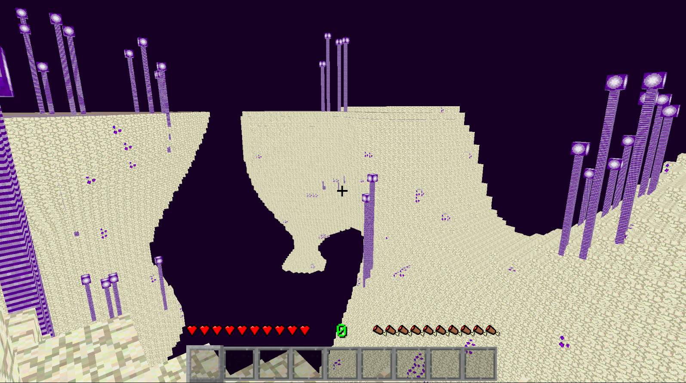
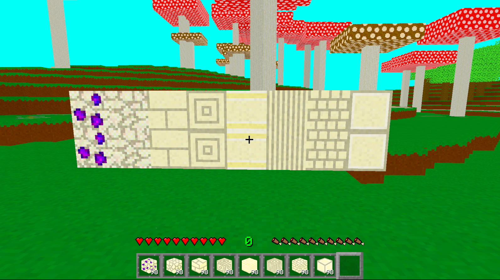
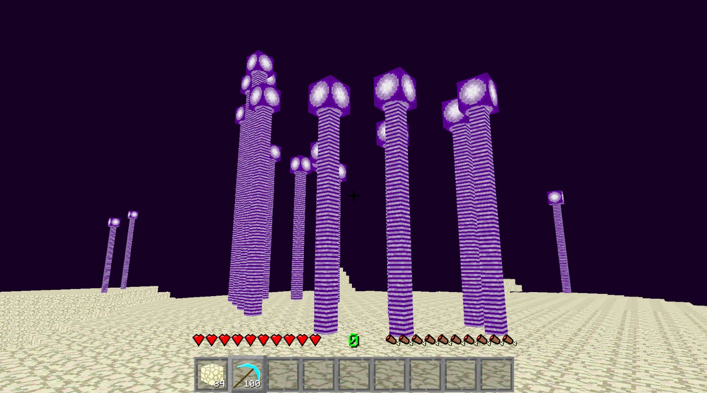
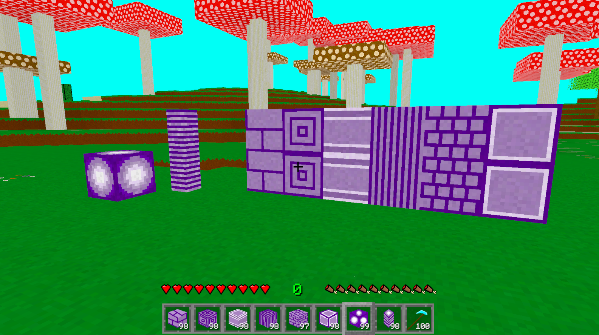
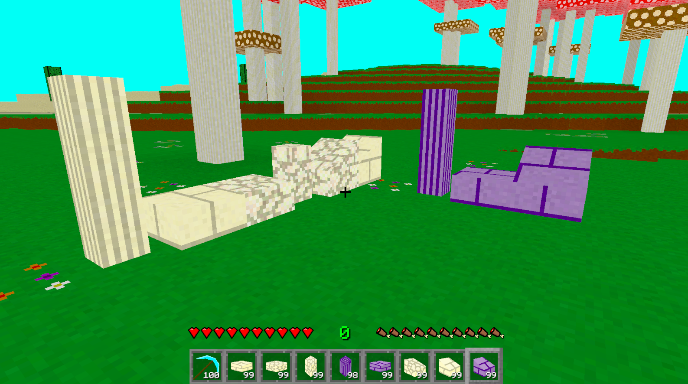
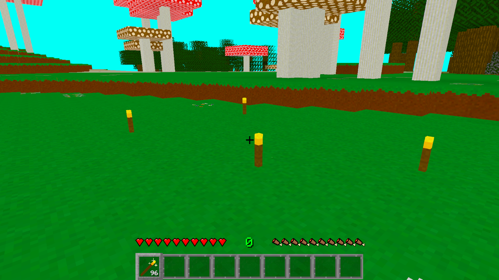
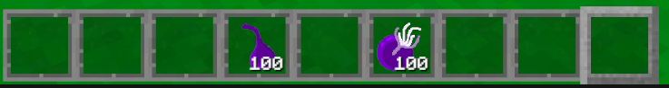

Devlog Ten Overview
I'll be honest. Minecraft's new announcement about their new dimension called The Sift, has inspired me to work on another dimension for myself. So, I'm making my games version of The End from Minecraft. Though it won't be exactly the same.
This update was another opportunity to push my terrain generation script in some weird directions, so that was cool. I wish I had any faith that my game could properly run the terrain with a much higher height limit, but I think it'd start lagging pretty good on any computer that wasn't an absolute beast. Like mine is. Subtle brag. In The End Dimension from Minecraft, the terrain is basically just chunks of End Stone floating in a void. Which mine is as well, but I tried to make the chunks of Void Stone take more advantage of height, so that not all the chunks feel like they're at the exact same height in the void. At least as much as my terrain generation will allow.
Main Features
The biggest main feature of this update is the fact that there is an entirely new dimension in the game. That's big stuff. A whole new dimension to travel and explore. This dimension, like The End in Minecraft, isn't the easiest to travel in. You're lucky if there's a natural bridge between the floating chunks of land, and even if there is, they're not exactly the most flat of surfaces. I was thinking of adding my own version of the Elytra in this update (and ender pearls as well), but I think I need to severely update my character controller first before I start messing with ways to move around the player more.
Another feature of this update is the amount of new blocks a player can get and build with. I feel like with each new update I do, the blocks are always what I'm most excited about. That's probably the builder in me. Plus I like thinking of ways the player can actually obtain these blocks. You'll see a lot about these blocks in the block section of this page. Along with the blocks, there are some items related to them as well.
Blocks
One block that'll jump right out to you is probably the Void Stone. Which is everywhere. That's the main block in this dimension. You might also notice patches of what I'm calling Nectar Void Stone. And of course, I made a full set of blocks that can be crafted from the Void Stone. And I should mention this in case any one had the thought: these blocks do look quite different from the sandstone block variations.


The plant structures you see all over the place are actually called DurDur Plants, and are comprised of two different blocks. The DurDur Stalk, and the DurDur Seed. The seed is the block at the top of the plant. The resources from the plant blocks can then be crafted into a set of different DurDur blocks.


And don't go thinking that I forgot about the stairs, slabs, and walls. Because I nearly did, and now I'm adding them in last minute. But I do have them in the game now.

Items
I did add a few items into this update. One of them being a torch. Which is technically a block, not an item, but I'm counting it an item because of it's size. It's shape is essentially just a smaller wall block, so this was pretty easy to add.

Then I of course added in some items related to the Void Realm. In the picture below you'll have DurDur Nectar on the left, and DurDur Fruit on the right. DurDur Nectar does nothing as of yet, but I have some cool ideas to use it in a future update or two. And it can be as you've probably guessed, harvested from Nectar Void Stone. A DurDur Fruit is a type of food that can be crafted from the DurDur Seed.

Conclusion
This update was very fun to work on. I have a lot of fun working on other dimensions because I can get very extreme with everything I add. In the Overworld, things have to be kinda Earth-like, but in other dimensions, I can get crazy. Like look again at the DurDur Fruit.
After this update though, I'm not sure what I want to work on for this game. I know I really need to start buckling down and working on getting the game more complete. Even though it's fun to work on these exciting side projects, they're not really essential to the core of the game. So, maybe I'll make the next update revolve around that, or maybe I'll just make an effort to start adding this type of stuff into the updates.
Also I thought I should mention this before I finish this update. DurDur isn't a complete ripoff of PurPur from Minecraft. A nickname my sister has for me is DurDuh. So PurPur turned into DurDur, the first part of the nickname repeated twice. I thought it was funny that the nickname was able to sneak into the game so easily.
And as a very quick after thought in case any one was wondering. If you combine all the blocks and items in the game, I now have 371 of them. So far.